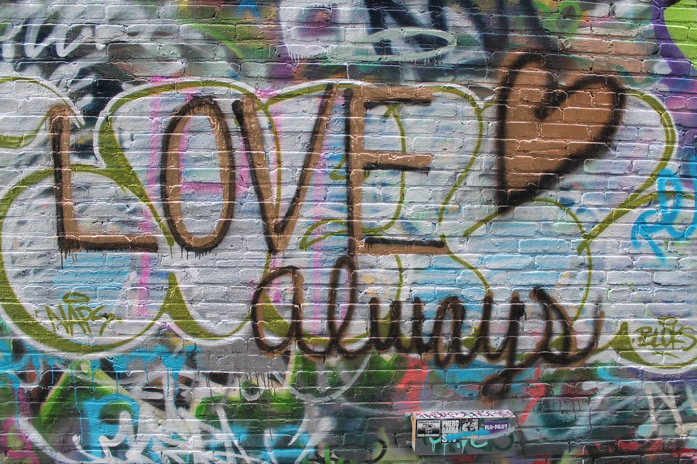

☰ open
Image 2

Link Here
This image is an example of a Jpg image which stands for Joint Photographic Experts
- Store raster images, in either RGB or CMYK, with DCT lossy compression
- Good for saving or sharing photographs
- I choose this image as an example because I love street art especially graffiti. I was taught how to
draw graffiti at a very young age. Some people look at it as deviance I say its art, a wa to express yourself.